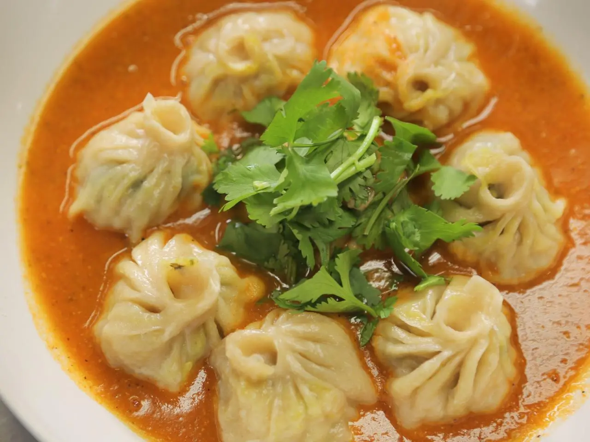

MOMO
Home

Description
It is famous nepali Cuisine Momo widely popular in Asia continent.
- 2 cups all-purpose flour (Maida)
- Water: 3/4 cup for kneading
- Minced meat or finely chopped vegetables: 500g
- Filling aromatics: Finely chopped onion, ginger-garlic paste, cilantro
- Achar: Spicy tomato and sesame dipping sauce
- Knead the flour with water to make a smooth dough
- Mix minced filling with aromatics, spices, and a splash of oil
- Roll dough into small thin wrappers and fill with mixture
- Pinch and fold edges to seal each dumpling safely
- Steam in a Momo steamer for 10 to 12 minutes
- Serve hot alongside spicy tomato dipping achar